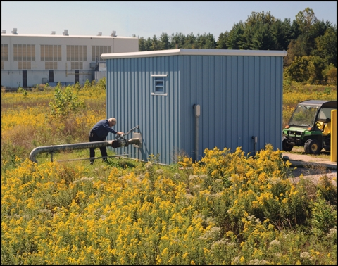

The federal government, including the U.S. Department of Energy (DOE) Office of Legacy Management (LM), has been challenged by Executive and DOE orders to reach two goals related to energy usage and metering. The first goal states that LM should reduce energy use intensity (EUI) by 30 percent by fiscal year (FY) 2020, as compared to the FY 2003 baseline. The metering goal was for LM to have 90 percent of its energy use individually metered by FY 2013, a goal that LM will now be able to meet by expanded metering of groundwater treatment systems at its sites.
EUI Goal – EUI is the energy use divided by building square footage. When the 2003 baseline was set, multiple sites that now fall under LM responsibility—such as the Rocky Flats, Colorado, Site and Fernald Preserve in Harrison, Ohio—had multiple buildings, which accounted for LM maintaining a large building square footage. The majority of these buildings have since been demolished, resulting in a drastic reduction of LM’s energy usage since 2003. However, because LM has reduced its building square footage even more, its EUI shows an increase, rather than decrease, since 2003. Certain energy uses can be excluded from the EUI calculation. Among those is energy used by mission-driven processes that are individually metered and reported on an annual basis.
The Fernald Preserve is located on the site of a former uranium processing facility that produced high-purity uranium metal products as an important step in America’s nuclear weapons production cycle. After the facility’s production operations ceased in 1989, the site underwent a $4.4 billion environmental cleanup, resulting in a site that has been restored to pre-settlement conditions, using native plants and grasses.
The only remaining remediation activity at the site is groundwater extraction and treatment through a system that is used to reduce the level of uranium in the groundwater. Although remediation activities are considered mission-driven processes, LM has been reporting the energy use because the extraction wells were not individually metered. As of July 2014, the lack of metering has been remedied.
Large capacity wells are used to extract 8 million gallons of water each day. The pumps used in these wells consumed 3,899,472 kilowatt-hours (kWh) of electricity in FY 2013, causing the preserve site to account for more than 88 percent of the total energy usage within LM. Approximately 90 percent of that usage was consumed by the extraction well pumps.
The control system for the groundwater remediation system, put into operation in 1997, had become obsolete and replacement parts, such as control boards, were difficult to obtain. In 2013, a decision was made to install a new well-field control system. Installation of the new system was completed and it was put into operation this summer. From this point forward, energy used by wells at the Fernald Preserve can be excluded from the EUI calculation. Since the well pumps are metered and used for remediation, LM can discontinue reporting their energy use and meet its 30 percent EUI reduction goal in FY 2015.
Metering Goal – LM’s second energy goal was to individually meter 90 percent of its energy use by FY 2013. Not having meters on the Fernald Preserve wells kept LM from reaching this goal. However, since all of the necessary equipment has been installed at the site, LM can report that nearly 99 percent of LM’s energy use is now metered.
Additional benefits of using the new metering system are simplified data collection and reporting. The new system control units feature a wireless data–download system. As operators make their weekly rounds, the past week’s data are downloaded via a hand-held data collection unit. This data will eventually be reported in the DOE Sustainability Dashboard, which is used to complete the annual Site Sustainability Plan for LM.
The new extraction-well control system promises to provide many advantages over the old system—including better analysis and troubleshooting tools through the availability of each well system’s data—and will help LM meet crucial energy goals.
| The new well-field control system at Fernald Preserve has reduced energy usage at the site, helping LM meet Executive and DOE energy use goals. Wireless functions within the system allow system monitoring for increasing efficiencies. |
|
 |
| Groundwater remediation efforts at Fernald Preserve account for more than 80 percent of LM’s energy usage. Recently installed electric metering capabilities at each extraction-well house helped LM hit its metering goals. The system’s extraction wells and pumps receive routine maintenance by a small staff of contractor employees. |